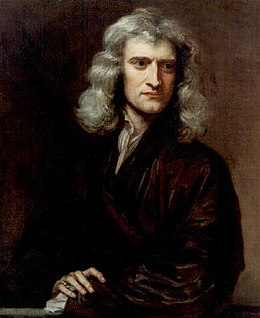

Para saber mais acesse Isaac Newton na wikipedia.
Sir Isaac Newton PRS foi um matemático, físico, astrônomo, teólogo e autor inglês que é amplamente reconhecido como um dos cientistas mais influentes de todos os tempos e como uma figura-chave na Revolução Científica.

Para saber mais acesse Isaac Newton na wikipedia.